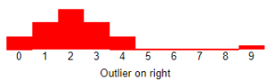

Dynamic Analysis of Two-Variable Data
Residual Plot
A graph that shows the residuals on the vertical axis and the independent variable on the horizontal axis. If the points in a residual plot are randomly dispersed around the horizontal axis, a linear regression model is appropriate for the data; otherwise, a nonlinear model is more appropriate.
The plot shows a random pattern, indicating a good fit for a linear model.

The other plot patterns are non-random (U-shaped and inverted U), suggesting a better fit for a nonlinear model.


Outliers
Example
|
Suppose we sample 10 households and note the annual income of each household. Suppose we find that nine of the households have incomes between $20,000 and $100,000, but the tenth household has an annual income of $1,000,000,000. That tenth household is an outlier.  |
Hidden Variable